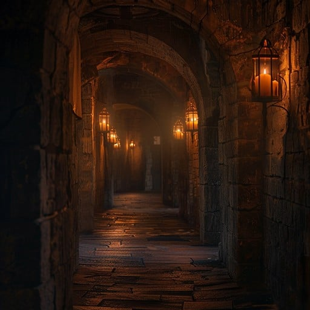

Du trittst durch die schmale Tür und findest dich in einem langen, düsteren Gang wieder. Die Wände sind aus altem, feuchtem Stein und werden nur von vereinzelten, flackernden Gaslaternen erhellt. Das Ticken der Uhren ist hier gedämpfter, aber immer noch allgegenwärtig. Der Gang teilt sich vor dir - ein Pfad führt zu einer schweren Eisentür, aus der ein warmes, goldenes Licht dringt, während der andere zu einer Wendeltreppe führt, die noch tiefer in die Dunkelheit des Turms hinabführt.
